Summary
Fields should be referenced directly in their declaring type.
Description
This audit rule finds places in types that declare fields where a declared field could be directly referenced but is instead being indirectly referenced through an accessor method. Such indirect reference is unnecessary and should therefore be avoided.
Example
Given a class that declares the following field and accessor method:
private int itemCount = 0;
public int getItemCount()
{
return itemCount;
}
The following usage of the accessor method would be flagged as a violation if it occurred within the class:
if (getItemCount() > 0) ...
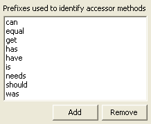
Summary
Avoid using instance initializers.
Description
Java allows the use of instance initializers to run blocks of code before an object's constructor. However, this is not a well known feature of the Java language, and it may make maintenance harder. Also, there is potential to violate encapsulation. This rule prohibits the use of these instance initializers.
Example
The following would be flagged as a violation:
public class Foo {
{
...
}
}
Summary
Assignments should not be nested.
Description
This audit rule finds assignments nested within other assignments.
Example
The assignment to the variable 'i' would be flagged as a violation in the following statement:
int a = (i = j * k) / 2;
Summary
Blocks should not be nested.
Description
This audit rule finds blocks nested directly within other blocks.
Example {
...
{
...
}
...
}
Summary
Don't use primitive types for method arguments.
Description
Prohibit the use of primitive types in method parameters. All parameters in methods should be Java objects. Exceptions are given to methods that override a superclass method that uses a primitive type as a parameter.
Example
The following method declaration, assuming that it does not override an inherited method, would be flagged as a violation because it has a parameter that is a primitive type:
public void setCount(int count)
Summary
Array declarators should be placed next to the type descriptor of their component type.
Description
This audit rule checks to ensure that the array declarators (the "[]" in the declaration of a variable with an array type) occur after the type name rather than after the variable name.
Example
The following declaration would be flagged as a violation because of the placement of the array brackets:
int x[];
It should be replaced by a declaration of the form:
int[] x;
Summary
Break statements should not reference a labeled statement.
Description
This audit rule finds break statements that reference a labeled statement. The use of a label with a break statement makes the code much harder to read and maintain, and should therefore be avoided. Consider moving the code that contains the break into a separate method and using a return statement instead.
Example
The following break statement would be flagged as a violation:
outer: for (int i = 0; i < array.length; i++) {
for (int j = 0; j < array[i].length; j++) {
if (array[i][j] == 0) {
break outer;
}
...
}
}
Summary
The conditional operator should not be used.
Description
This audit rule finds places where the conditional operator (?:) has been used.
Example
The following use of the conditional operator would be flagged as a violation:
netSales = customerGetsDiscount(grossSales) ? computeDiscount(grossSales) : grossSales;
Summary
Constants should appear on the same side in comparisons.
Description
This audit rule looks for comparisons involving exactly one constant value and ensures that the constant appears on the side selected by the user. This is primarily useful to ensure consistency for ease of comprehension. There is some justification for specifying that constants should appear on the left because then the compiler will catch cases where the assignment operator was mistakenly used when a comparison operator was intended.
Example
If the rule has been configured so that constants are required to be on the left hand side, the following comparison would be flagged as a violation:
if (count > 0) {
...
}
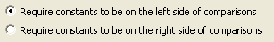
Summary
Continue statements should not reference a labeled statement.
Description
This audit rule finds continue statements that reference a labeled statement. The use of a label with a continue statement makes the code much harder to read and maintain, and should therefore be avoided.
Example
The following continue statement would be flagged as a violation:
outer: for (int i = 0; i < array.length; i++) {
for (int j = 0; j < array[i].length; j++) {
if (array[i][j] == 0) {
continue outer;
}
...
}
}
Summary
Variables of certain types should be declared using an interface.
Description
This audit rule finds declarations of fields, local variables, and methods whose type should have been declared to be an interface but was declared to be a class that implements the interface instead. The list of interfaces that are checked can be configured.
Example
If the type java.util.List is on the list of interfaces, the following would be flagged as a violation because the declared type of the field should have been "List":
private ArrayList myList;
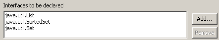
Summary
Types should declare a default constructor.
Description
This audit rule finds class declarations that do not contain the declaration of a default (zero argument) constructor.
Example
The following class declaration would be flagged as a violation because it does not implement a default constructor:
public class Employee
{
public Employee(String name)
{
...
}
}
Summary
The default case should be the last case in a switch statement.
Description
This audit rule finds switch statements in which the default case is not the last case. Making the default case always be last improves the readability of the code by making it easier to locate the default behavior.
Example
The following case statement would be flagged as a violation because the default case is not the last case:
switch (registrationType) {
case 0: \ audit
...
default:
case 1: \ for credit
...
case 2: \ pass/fail
...
}
Summary
Constants should be defined in an interface.
Description
This audit rule checks for constants (public static final fields) that are declared in a class. Such fields should be declared in an interface so that they are easier to share and can be referenced without introducing extra coupling.
Example
The following field declaration would be flagged if it occurred outside of an interface:
public static final int DAYS_IN_WEEK = 7;
Summary
Arrays should not be statically initialized by an array initializer.
Description
This audit rule checks for array variables that are initialized (either in the initializer or in an assignment statement) using an array initializer.
Example
The following array declaration would be flagged because of the use of an array initializer:
int[] values = {0, 1, 2};
Summary
Code should not be defined in the default package.
Description
This audit rule looks for compilation units that are declared in the default package. All code should be structured into packages.
Summary
Boolean literals should never be used in equality tests.
Description
This audit rule finds equality tests (using either == or !=) in which either or both of the operands are a Boolean literal (either true or false).
Example if (todayIsTuesday() == true) {
...
}
Summary
Instance fields should, or should not, be accessed using "this".
Description
This audit rule checks for the explicit usage of the keyword "this" when accessing instance fields. The rule can be configured to always check for the presence or absence of the keyword.
Example
If the rule is configured to disallow using "this" to qualify fields unless necessary, the following expression would be flagged as a violation:
public void incrementCount(int amount)
{
this.count += amount;
}
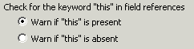
Summary
Extra semicolons clutter the code and serve no useful purpose.
Description
This audit rule finds places where a semicolon occurs but is not needed. While not strictly an error, such semicolons clutter the code and serve no useful purpose.
Example while (index < count) {
index = index + 1;;
};
Summary
All nested expressions should be fully parenthesized.
Description
This audit rule checks for nested binary expressions that are not fully parenthesized and flags them.
Example
The two multiplication expressions in the statement below should each be parenthesized to make clear the order of precedence:
result = x * x + y * y;
Summary
A main method should only be declared in application classes.
Description
This audit rule checks for declarations of a main method occurring in non-application classes. This is most commonly done in order to write testing code, but testing code should be written in a test case.
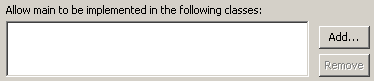
Summary
Inappropriate language should not be used in the source code.
Description
This audit rule finds uses of inappropriate language within the source code.
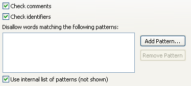
Summary
All static fields should be initialized.
Description
This audit rule looks for static fields that are not initialized. A static field can be initialized either as part of its declaration or in a static initializer.
Example
Assuming that there are no static initializers in the class containing the following static field declaration, it would be flagged because the field is not initialized:
private static HashMap instanceMap;
Summary
Verification that local variable declarations follow a specified style of coding.
Description
This audit rule finds source in which local variable declarations do not follow a specified style of coding. This includes the order of local variables defined in a block of code, whether or not each variable is explicitly initialized, and whether or not each variable is declared in a separate statement.
Example
If the rule is configured to require that local variables be declared at the beginning of the method, then the following variable declaration would be flagged as a violation:
public boolean equals(Object object)
{
if (!(object instanceof OrderedSet)) {
return false;
}
int thisSize = getSize();
...
}
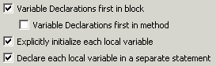
Summary
Methods that do not access any instance state or instance methods should be static.
Description
This audit rule checks for methods that do not access any instance state or instance methods. Such methods should be made static. Note, however, that this method does not find methods that only call instance methods that should also be static, so changing some of the methods to static methods might cause additional methods to then be flagged.
Example
The following method would be flagged as a violation because it does not reference any instance specific state:
public int getDefaultSize()
{
return 256;
}
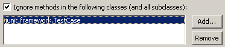
Summary
A single statement should never be used where a block is allowed.
Description
This audit rule checks for statements that control the execution of another statement (do, for, if or while) to ensure that the statement being controlled is always a block.
Example if (color == null)
color = getDefaultColor();
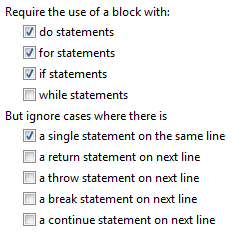
Summary
Methods should have a single return statement.
Description
This audit rule looks for methods that contain multiple return statements (or constructors or void methods that contain any return statements). Such methods are generally too complex and need to be rewritten or refactored in order to make their logic easier to understand.
Example
The following method would be flagged:
public int returnCode(String str)
{
if (str == null) {
return 0;
} else if ("ABC".equals(str)) {
return 1;
} else if ("123".equals(str)) {
return 2;
} else {
return -1;
}
}
Summary
The condition in a conditional operator should be parenthesized if it contains a binary operator.
Description
This audit rule looks for uses of the conditional operator in which the condition contains a binary operator but has not been parenthesized.
Example
The following expression would be flagged as a violation because the condition is not parenthesized:
childCount = children == null ? 0 : children.size();
Summary
Some expressions are preferred over other equivalent expressions.
Description
This audit rule searches for expressions that can be replaced with other equivalent and more preferred expressions. Specifically Colors can be replaced with Color constants and Booleans with Boolean constants.
Example
The expression
new Color(0, 0, 0)
can be replaced by
Color.black
and the expression
new Boolean(true)
can be replaced by
Boolean.TRUE
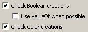
Summary
Return the value of a boolean expression directly.
Description
Rather than testing a boolean value in an if-statement then returning true or false, simply return the value of the boolean expression directly.
Example if (booleanValue)
return true;
else
return false;
Should be changed to:
return booleanValue;
Summary
Static members should only be accessed by referencing the type in which they are declared.
Description
This audit rule looks for references to static members that use either a subtype of the type in which they are declared or an instance of either the declaring type or one of its subtypes.
Example
Given the following declarations:
public class DeclaringClass
{
public static final int ZERO = 0;
...
}
public class SubclassOfDeclaringClass extends DeclaringClass
{
...
}
DeclaringClass instanceOfDeclaringClass;
SubclassOfDeclaringClass instanceOfSubclass;
The following expressions would all be flagged as violations:
SubclassOfDeclaringClass.ZERO
instanceOfDeclaringClass.ZERO
instanceOfSubclass.ZERO
Summary
Verification that type declarations follow a specified style of coding.
Description
This audit rule finds source in which type declarations do not follow a specified style of coding. One example is that the first type declaration in a file should be a one with a name matching that of the file if such a type is defined in the file.
Summary
Verification that type members follow a specified order.
Description
This audit rule is used to check the order of members within a type. Simple rules include checking that main() is last and that members with a common name are grouped together. More complex orderings are specified with the Global Ordering check box. When the global ordering check box is checked you can choose one of the orderings from the list:
Alphabetical - all members should be arranged alphabetically by name with no regard for member type or modifiers. Initializers have no names and can appear anywhere.
Fields First - members should appear in the order: fields, initializers, constructors, methods, inner types. Within those groups they should be arranged alphabetically.
Constructors First - members should appear in the order: constructors, fields, initializers, methods, inner types. Within those groups they should be arranged alphabetically.
Public to Private - members should appear in the modifier order: public, protected, private. Within those groups they should be arranged alphabetically.
Private to Public - members should appear in the order: private, protected, public. Within those groups they should be arranged alphabetically.
The above choices are followed by combinations. "Fields First/Public to Private", for example, means that members should be arranged in Fields First order, be arranged in Public to Private order within those groups, then alphabetically. The other combinations follow suit.
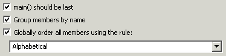
Summary
The expression in a return statement should not be parenthesized.
Description
This audit rule looks for return statements where the expression that computes the value to be returned is enclosed in parentheses. They are unnecessary and typically make the code harder to read and maintain.
Example
The following return statement's expression would be flagged as a violation because the parentheses are not necessary:
return (x * x);
Summary
Disallows the use of "while" loops.
Description
This audit rule checks for the use of "while" loops rather than "for" loops. "for" loops allow loop-scoped variables to be declared during loop setup, minimizing the scope of loop-control variables to just the body of the loop. Since their scope ends after the loop, they cannot be referenced later accidentally.
Example
The following while loop would be flagged as a violation:
int index = 0;
while (index < array.length) {
...
index++;
}
because it should be rewritten as:
for (int i = 0; i < array.length; i++) {
...
}
Summary
Compound assignment statements are more compact and hence make the code easier to read.
Description
This audit rule looks for simple assignment statements that could be converted into compound assignment statements.
Example
The following assignment would be flagged as a violation:
sum = sum + array[i];
because it could be more compactly written as:
sum += array[i];
Summary
Values should not be compared using equals (==) or not equals (!=).
Description
This audit rule finds places where two values are compared using either the equals (==) or not equals (!=) operators.
Example
The following expression would be flagged as a violation:
if (firstString == secondString) {
because it should be rewritten as:
if (firstString.equals(secondString)) {
Summary
Use String.equals() rather than String.equalsIgnoreCase() to compare strings.
Description
The method String.equals() should be used rather than the method String.equalsIgnoreCase() to compare strings.
Example
The following use of the method equalsIgnoreCase() would be flagged:
if (command.equalsIgnoreCase("delete")) {